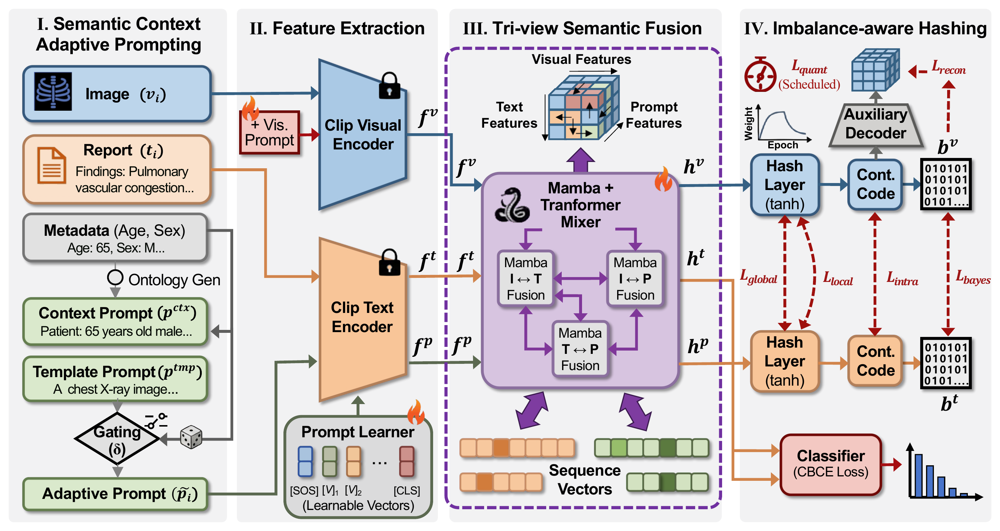
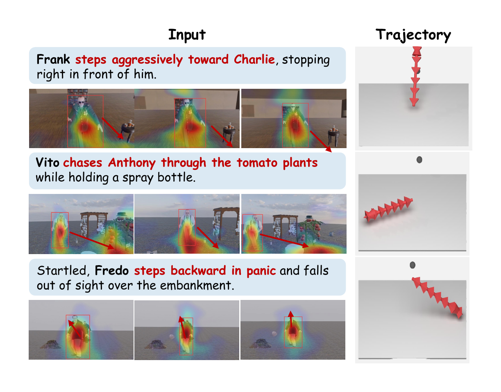

 TriPAH: Imbalance-Aware Tri-Prompt Affinity Hashing for Cross-Modal Medical Retrieval Jiaming Bian, Songming Li, Yurui Song, Yunfei Chen, Yichao Cao, Jun Long ICME 2026 · Oral Citation Details
 Look-Before-Move: Narrative-Grounded World Visual Attention in Dynamic 3D Story Worlds Jiaming Bian, Bingliang Li, Yuehao Wu, Pichao Wang, Zhi Wang, Hailan Ma, Huadong Mo, Zhenhong Sun NeurIPS 2026 · Poster Citation Details